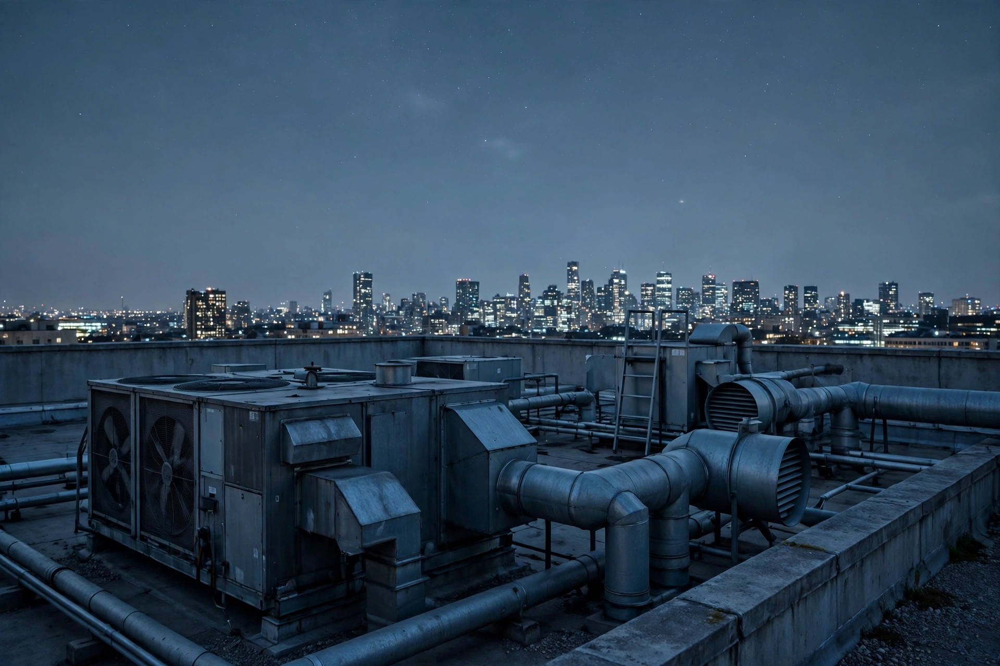

📊 Hzの目安
室外機やエコキュートの音は、機種や運転状態、設置場所によって大きく変わります。あくまで目安として、低い唸り音のような低音域が中心になることが多く、ファンの音などはそれより広い帯域に広がります。単一のHzで決めつけることはできません。気になる音の感じ方に近い、一定の低い音から試してみてください。
20Hz40～1000Hz5000Hz
この記事の要点
- 機械の音は、ずっと続く低い音であることが多く、静かな夜ほど気になります。
- ずっと続く音に対しては、同じようにずっと続く、一定の音を控えめに流す方法が合います。機械音は、このサイトの扱う音の中ではマスキングと相性の良いほうです。
- 自分の家の機械か、隣の家の機械かで、取れる対策が変わります。
- 低い音は壁や窓を通り抜けやすく、再生機器によっては肝心の帯域が出ません。効かないときは機器の見直しから。
- 普段と違う大きな音や異音は、故障の可能性があります。音で紛らす前に点検の相談を。
⏱ 急いでいる人へ ― 今夜やること3つ
📖 目次
🔊 機械音の正体
室外機やエコキュートの音は、ひとつの音ではなく、いくつかの音の重なりです。
| 音の種類 | 正体 | 特徴 |
|---|---|---|
| 唸り音 | 圧縮機（コンプレッサー）やモーターの回転音 | 低く一定。機械音の中心。運転の強さで音程や大きさが変わる |
| 風の音 | ファンが空気を送る音 | 「ゴー」という広い帯域の音。風量で変わる |
| 振動・共鳴音 | 本体の振動が、置き台・壁・床に伝わって鳴る音 | 「ブーン」と部屋側で大きくなることがある。設置の状態に左右される |
| 切り替わり音 | 運転の開始・停止、除霜運転などへの切り替わり | 短い変化音。一定の唸りの中で、ここだけ耳に付く |
低い音ほど、壁や窓を通り抜けたり、回り込んだりしやすい性質があります。だから機械音は「窓を閉めても聞こえる」「部屋のどこにいても同じように聞こえる」と感じやすいのです。また、唸りがゆっくり強くなったり弱くなったりする「うなり」のような変化があると、耳はその変化を追い続けてしまいます。
なぜ気になるのか
機械の音は、ずっと続く低い音であることが多く、静かな夜ほど気になります。運転の状態や、設置場所、建物の構造によって、聞こえ方は変わります。
低い唸り音には、耳で聞くというより体に響くように感じる面があります。壁や床、窓を伝わって届くため、部屋のどこにいても逃げ場がないように感じやすい音です。また、完全に一定ではなく、運転の強さが変わるたびに唸りが強くなったり弱くなったりする「変化」も、耳が離れない理由のひとつです。
とくにエコキュートは、電気代の安い深夜に沸き上げる設定のことが多く、いちばん静かな時間帯にいちばん鳴るという困った重なり方をします。昼間は周りの音に紛れて気にならない機械音が、夜だけ問題になるのは、背景の音（暗騒音）が下がって落差が広がるためです。機械そのものが夜にうるさくなるわけではありません。
🎧 マスキング音の考え方
ずっと続く音に対しては、同じようにずっと続く、一定の音を控えめに流す方法が合います。音量を上げすぎないこと、近い帯域の音を選ぶことがコツです。機械の音そのものを消すものではありません。
機械音はこのサイトの扱う音の中では、マスキングと相性の良いほうです。対象の音も、隠す音も、どちらも一定だからです。足音や話し声のように「始まりと終わりの落差」に悩まされることが少なく、背景の音を少し持ち上げれば、そのまま目立ちにくくなります。まずは控えめな音量で一晩試してみてください。
🏠 音の出どころごとの目安
エアコンの室外機：まず「自分の家の室外機か、隣の家の室外機か」で対策が分かれます。自分の家なら、設置面との共振を防ぐ防振ゴムの確認や、置き台のぐらつきの見直しなど、本体側の工夫ができます。振動が伝わって鳴っている場合は、音源そのものより「伝わり方」を断つほうが効きます。隣の家・隣室のものなら、自分では触れないので、マスキングでしのぎながら、必要なら管理会社を通じた相談になります。
エコキュート・給湯器：深夜の沸き上げ音は、タンクの設置場所（ベランダ・共用廊下側など）で響き方が変わります。自分の家のエコキュートなら、沸き上げの時間帯設定を変更できる機種もあります（取扱説明書やメーカー確認のうえで）。給湯器はお湯を使うときに出る、燃焼や運転の低い音です。鳴るタイミングがお湯の使用と重なるのが特徴で、ずっと続く音ではないため、マスキングで合わせるより先に「いつ鳴るか」を把握すると落ち着くことがあります。異音や異常を感じたら、ガス機器なので無理に使い続けず、管理会社やメーカーに相談してください。
冷蔵庫：コンプレッサーの低い唸り音（「ブーン」という音）が中心で、静かな夜ほど気になります。帯域の目安はこの記事の機械音と近く、同じマスキング音で試せます。本体が壁や床に接していると振動が伝わりやすいため、自分の冷蔵庫なら設置位置の見直しも選択肢です。冷えが悪い、普段と違う大きな音がする場合は、故障の可能性があるためメーカーや管理会社に相談してください。賃貸の備え付け家電は、勝手に交換できないことがあります。
パソコンの稼働音：ファンなどの動作音です。自分の部屋では小さな音でも、パソコンを床に直置きしていると振動が床を伝わり、下の階では低い唸りのような音になって届くことがあります。自分のパソコンなら、台の上に置いて床から離す、ファンを静音タイプに交換するといった、本体側の対策から試す価値があります。運営者の実例では、下の階から「音楽がうるさい」と言われ続けた音の正体がこの稼働音で、置き場所を変えてファンを換えたら実際に音が静かになり、苦情も止みました（経緯は運営者の体験談にまとめました）。
浴室の給排水の音：水が流れる音が中心の場合は、機械音よりも水の音に近いです。水の音の記事もあわせてご覧ください。
🎧 8時間のマスキング音
室外機・機械音が気になるときに合わせた、8時間のマスキング音です。音量は控えめにしてお使いください。
🎛 効かせるための使い方
再生機器がいちばんの分かれ目
機械音の中心は低い帯域です。スマートフォン本体のスピーカーは構造上、低音を出すのが苦手なため、「動画を流しているのに効かない」という場合は、音源ではなく機器の限界であることが多いです。小さくても低音の出る外部スピーカーか、イヤホンで試してみてください。ここを変えるだけで結果が変わることが、機械音では特に多いです。
置き場所
音の入り口側、つまり室外機に面した窓際にスピーカーを置くと、入ってくる音と混ざりやすく、少ない音量で効きやすい場合があります。逆に、枕元で大きく流すより、入口側で小さく流すほうが自然に聞こえます。
自分の家の機械なら、本体側が先
音源が自分の室外機や冷蔵庫なら、防振ゴムの劣化確認、置き台の水平、壁との接触の見直しといった「発生と伝わりを減らす」対策が、マスキングより先に効きます。マスキングは、隣の機械など「自分では触れない音」のための方法だと考えてください。
🔁 効きにくいと感じたら
- 再生機器を見直す ― スマートフォンのスピーカーは低い音を出すのが苦手です。唸り音が非常に低い場合、スマホ本体の再生では肝心の帯域が出ていないことがあります。小さくても低音の出るスピーカーやイヤホンで試してみてください
- 置き場所を変える ― 音源（窓際など）に近い側にスピーカーを置くと、入り口で紛れさせる形になって効きやすい場合があります
- 耳栓と併用する ― 低い唸りは耳栓でも完全には止まりませんが、輪郭が少し弱まります（耳栓とマスキング音の併用）
- 異常な音は対策より先に点検 ― 「最近急に大きくなった」「金属音が混ざる」といった変化は、故障のサインのことがあります。音で紛らす前に、メーカーや管理会社へ
📏 自分の部屋の音を測ってみる
「何時ごろに鳴り始めて、どのくらい続くか」を記録しておくと、自分の家の機械の設定見直しにも、隣の機械についての相談にも役立ちます。Web版の測定器でレベルの目安も残せます。
スマートフォンのマイクは低い音を拾いにくいため、機械音のような低音は実際より小さく表示される傾向があります。数値は目安として、時刻と頻度の記録と合わせてお使いください（騒音測定アプリの使い方と限界）。
🚫 やってはいけないこと
- 隣の室外機を勝手に触る・動かす ― 他人の設備に手を入れることはできません。気になる場合は、管理会社を通じて伝えるのが順番です
- 異常っぽい音を、マスキングで誤魔化し続ける ― 急に大きくなった音や金属音は、故障が進んでいるサインのことがあります。とくにガス機器は、無理に使い続けないでください
- 自分の室外機の音を、確認せずに放置する ― 自分の機械の音が、隣の家にとっての「機械音」になっていることもあります。深夜の静かな時間に一度、外で聞こえ方を確認しておくと安心です（自分の音が気になる場合は自分の音の対策へ）
❓ よくある質問
- Q. エコキュートは、なぜ深夜にだけうるさいのですか？
- A. 多くの機種は、電気料金の安い深夜の時間帯にお湯を沸き上げる設定になっているためです。機械が夜にだけ本気で動くうえ、周りがいちばん静かになる時間と重なるので、余計に目立ちます。自分の家の機種なら、沸き上げ時間帯の変更ができる場合があります。
- Q. 窓を閉めても聞こえるのはなぜですか？
- A. 低い音は、ガラスや壁を通り抜けたり、建物の構造を伝わったりしやすいためです。窓の開閉で大きく変わるのは、むしろ中～高音域の音です。だから機械音の対策は「塞ぐ」より「紛らせる」が現実的になります。
- Q. 低い唸り音は、体に悪いのではないかと心配です
- A. 低周波の音と健康の関係については、さまざまな報告がありますが、このサイトで判断できることではありません。音の大きさや感じ方には個人差も大きいため、心配な場合は、自治体の相談窓口や専門機関にご相談ください。このサイトでは、音への対処法の範囲で情報を提供しています。
- Q. 自分の家の室外機がうるさい場合は、どうすればいいですか？
- A. 防振ゴムの劣化、置き台のぐらつき、本体と壁の接触など、「振動の伝わり方」に原因があることが多いです。自分で確認できる範囲で見直し、改善しなければメーカーや設置業者への相談を。異常音をマスキングで隠すのは、この場合は順番が逆です。
⚠️ 注意
機械の故障や異常な音が疑われる場合は、メーカーや管理会社への相談をご検討ください。このサイトは、機械の修理や点検のアドバイスをするものではありません。